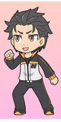

Anime : Japanese Animation
It has been decades since Japanese animation came to our life in Malaysia. From our beloved childhood story, Doraemon
to our recent military mecha war drama thriller, Gundam:Iron Blooded Orphans (IBO),
Japanese animation, also widely known as simply anime among the fans, has influenced many individuals, regardless of their age out there as their hobby.
It was one of the biggest industry in Japan with 430 production companies. According to a 2016 article on Nikkei Asian Review, Japanese television stations have bought over ¥60 billion worth
of anime from production companies "over the past few years", compared with under ¥20 billion from overseas.
That's a lot of number!
While watching anime is considered as a hobby, in reality watching anime is a matter of choice. Anime is simply an animation works done by anyone, but in this case, we're talking specifically on
Japanese animation. Despite its generality on industry, there are few things what makes it stand out from the rest of animation like Western animation or other asian animation.
And that is the style, the themes, and the genre.
- The Style
- The Themes
- The Genre
Jump to : Related Photos , See Also
The Style:
In order to compete with ever growing animation industry like Disney or Nickelodean, anime needed something to make it appear unique and fresh. Therefore,
a unique drawing style and caricature were born in this industry. With this, anime almost always unique with its drawing style. A few of those characteristics are the way
the artist draw the character's face and their posture. The artist usually draws the character with exxageration in some of the details, by making them appear larger or smaller or
etcetera in comparison to other animation drawing, while trying to match the proportions of human body in reality, adding some realism and fantasy in their design. The color in
the animation was lively or darker to empahsize the tone of the story itself, with more frame for in-between scenes to make the movements of the character much more flexible and fluent.
As an example, there is a style called chibi, which deformed the character's height and posture (looking all chubby and cute) compared to its original form. This form is considered
cute by many fans and used to indicate cute or humorous scene.
The Themes :
The themes used in anime are almost the same that are being used around the world. It includes the themes of friendships, fantasy, love and
many others in the story. What makes it so unique is that how the story was set up and how the author brings the joy or thrill of watching them. Despite the cliche or the
overused themes, combined with its drawing style, it always appear to be distinctive to another type of animation out there.
The Genre :
Anime is a big industry, therefore it has many genre to satisfy the fans all over the world. The multiple type of genre also act as an indicator the themes and content
of the story itself. Some of them includes
- Shounen
- Seinen
- Shoujo
- Josei
- Kodomomuke
.
Each of this genre are also targeted to different age level of the audience while some of them may use same theme witht the same genre, with different characters or story.
Shounen
Literally meaning “few years,” “shonen” (少年) typically refers to young boys under the age of 18. Thus, shonen anime and manga are aimed at that demographic. A lot of these anime and
manga have a young male hero and are focused on action, adventure, and fighting. However, comedies and series with female protagonists are becoming more and more common. Shounen works often
have more than a fair share of fanservice as well. Some popular examples of shonen anime and manga are Dragon Ball, Bleach, Naruto, One Piece, Watamote and Attack on Titan.
Seinen
“Seinen” (青年), on the other hand, refers to young men, aimed at those who are preferably 18 and above. Seinen anime and manga tend to be of a more violent and/or psychological nature
than shonen series—though, of course, there are seinen comedies as well. They can also have content of a adult nature (though this is not the focus of the work). Famous seinen anime and
manga include such titles such as Berserk, Ghost in the Shell, Akira, Hellsing, and Gantz.
Shoujo
“Shojo” (少女), which is often translated as “young girl,” is the female counterpart to shonen, and anime and manga of this type are aimed at girls between the ages of 10 and 18. These tend
to focus on romance and interpersonal relationships—though this does not mean they are necessarily without action or adventure. Shojo works almost always have a female lead. Popular Shojo
works include NANA, Sailor Moon, Revolutionary Girl Utena, Fushigi Yuugi, and Ouran High School Host Club.
Josei
Anime and manga of the “josei” (女性) variety are aimed at adult women. Josei series are often slice-of-life or romantic tales featuring adult women, though, in recent years, shonen-like
action-adventures have become popular as well. In general, these works tend to contain more realistic interpersonal relationships (as opposed to shojo’s often idealized ones) and can cover
darker subjects like rape, trauma and infidelity. While many josei anime and manga have female main characters, many others have male characters. Male leads are usually of the pretty-boy
variety and stories featuring them often have homosexual undertones. Popular josei series include Loveless, Paradise Kiss, Honey and Clover, 07-Ghost, and Makai Ouji: Devils and Realist
Kodomomuke
Literally meaning “directed at children,” “Kodomomuke” (子供向け) anime and manga are exactly that. Kodomomuke works tend to be simple, imaginative stories that teach morals and other
core values to young readers. Sometimes they are original stories while other times they are adaptations of Western classical literature. Popular children’s series include Doraemon,
Hello Kitty, Chibi Maruko-chan, Heidi, Girl of the Alps, Anne of Green Gables, and Anpanman.
Related photos
 One of the anime style of drawing
One of the anime style of drawing
The chibi style of drawing in anime
See Also :
Wikipedia on Anime | Re:Zero Official Website |
Crunchyroll: Official, streaming website